One of the greatest and most well-known Greeks myths is the 12 Labors of Heracles. After killing his wife Megara and children because of a madness cursed on him by Hera, Heracles was tasked with completing 12 impossible feats by King Eurystheus in an attempt to make up for the death of his wife and children.
Here, I have created a map to show where each of his 12 labors is thought to have taken place.
I would like to note that while some of these locations are associated with modern maps, the others on this map are theorized locations based off of the inforation provided in each story.
THE FIRST LABOR: The Nemean Lion
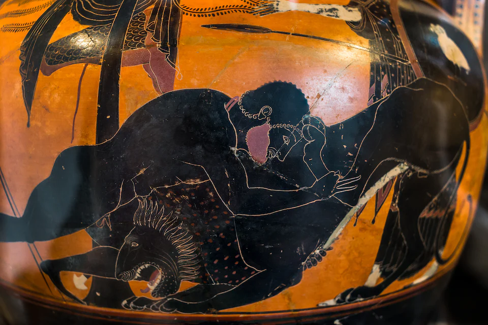Herakles Wrestleing with the Nemean Lion
Psiax (520–500 BCE) Photograph by Maria Daniels
THE SECOND LABOR: The Hydra
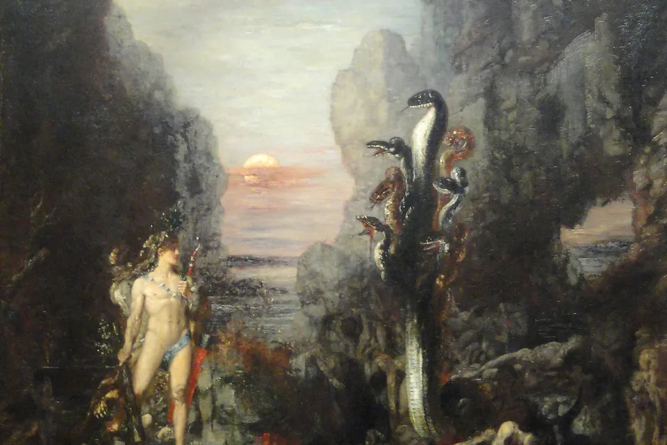Hercules and the Lernean Hydra
Gusta Moreau (1875-1876)
University of California Library
THE FOURTH LABOR: The Erymanthian Boar
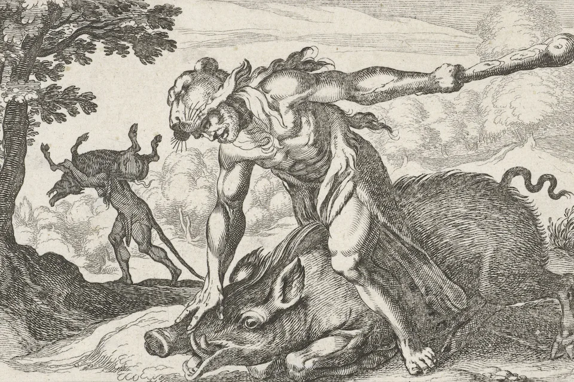Hercules Catching the Boar of Erymanthus
Simon Frisius, after Antonio Tempesta (1610–64)
THE FIFTH LABOR:
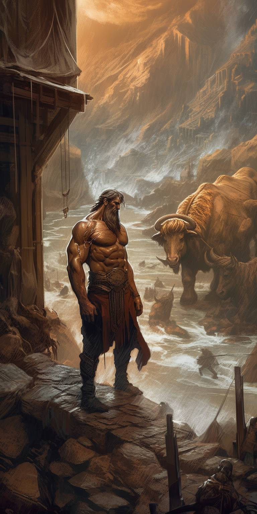Hercules clean the Augean stables in a single day
Art by Sylvester0102
tHE SIXTH LABOR:
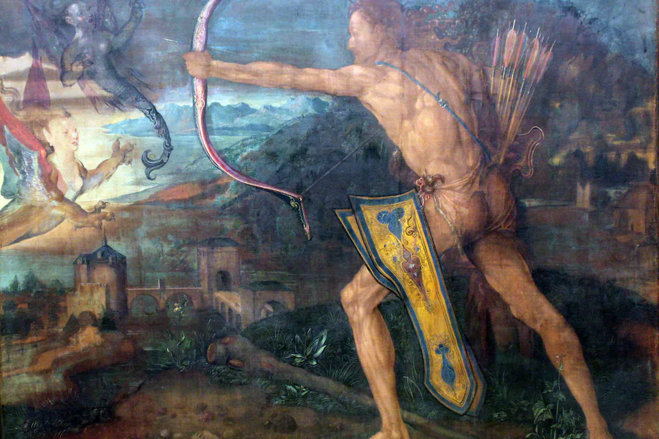Hercules Killing the Stmphalian Birds
Albrecht Dürer (1500)
GERMANISCHES NATIONALMUSEUM, NUREMBERG
THE SEVENTH LABOR:
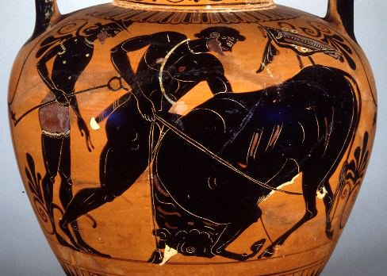Hercules Ropes the Cretan Bull
(530-520 B.C) Photograph by Maria Daniels
THE EIGHTH LABOR:
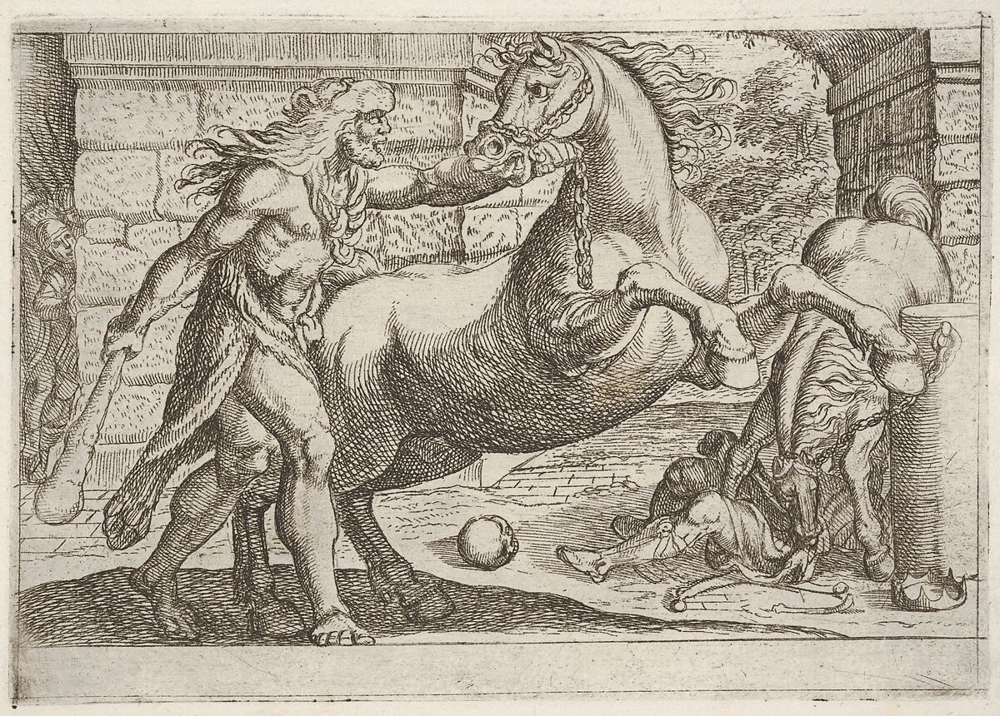Hercules and the Mares of Diomedes
Antonio Tempesta (1608)
THE NINTH LABOR:
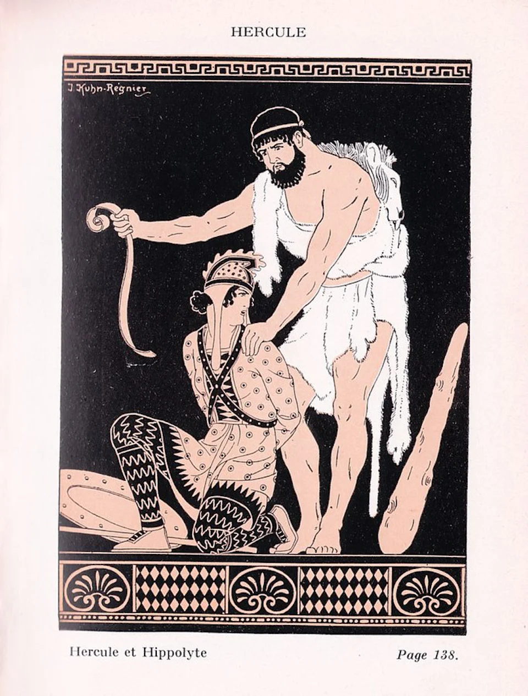Hippolyta
Joseph Kuhn-Régnier(1936)
THE TENTH LABOR:
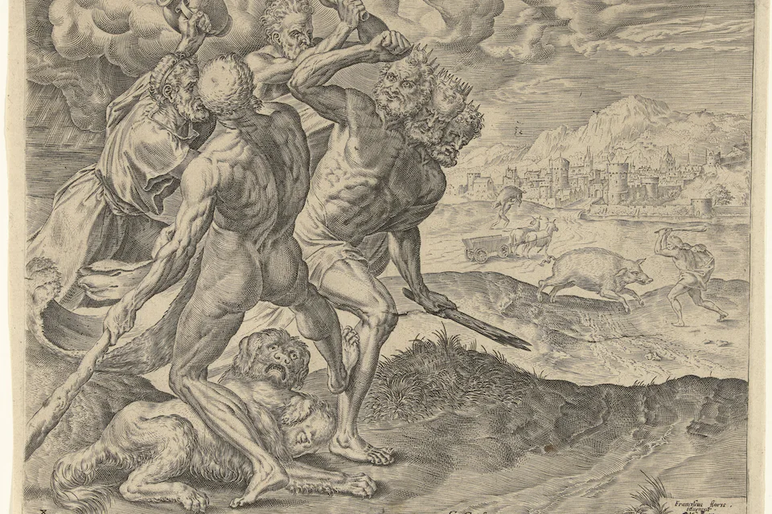Hercules Kills Geryon and His Dog
Cornelius Cort, after Frans Floris (1563–95)
THE ELEVENTH LABOR:
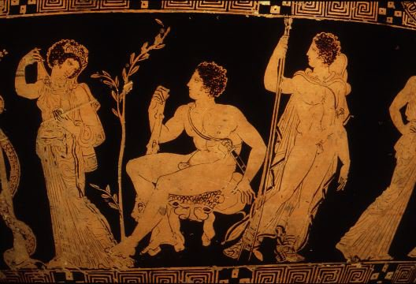Hercules in the garden of the Hesperides
Photograph courtesy of the Trustees of the British Museum, London (410-400 B.C.)
Hercules: Greece's Greates Hero
THE TWELFTH LABOR:
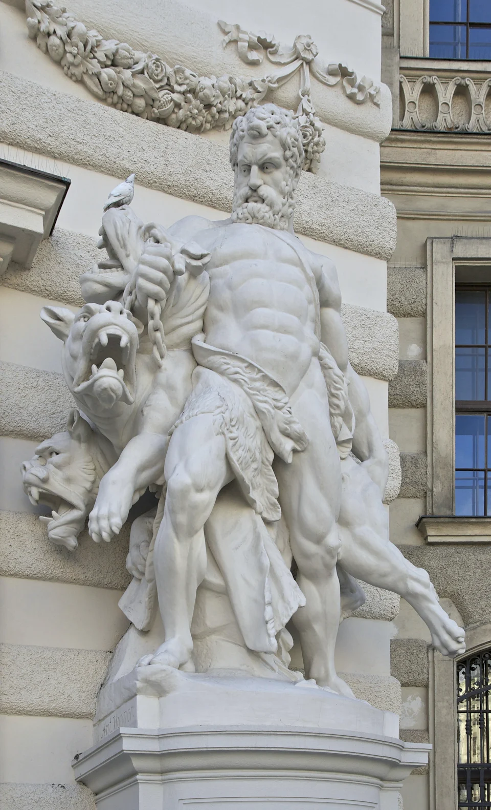Hercules and Cerberus Statue
Atonin Pavel Wagner (1893)
{kind=link}
{kind=link}
{kind=link}